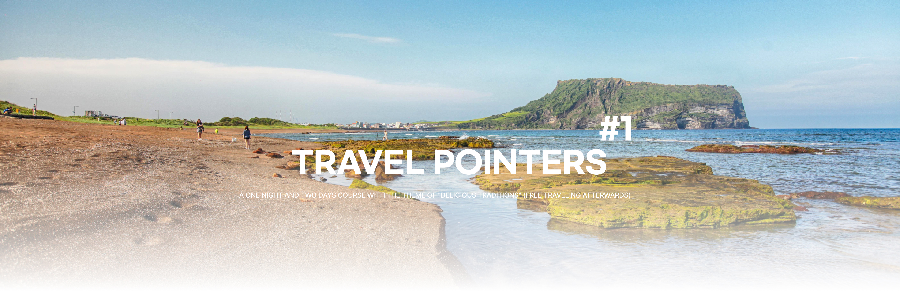
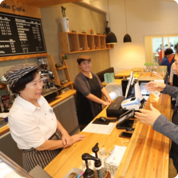
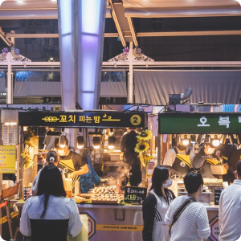
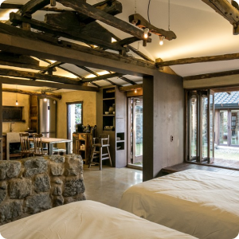
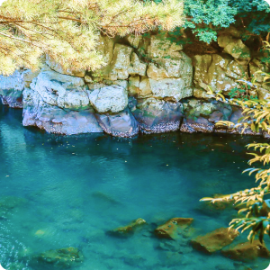
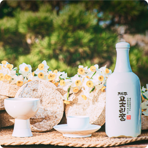

|  |
Salle Cafe
It is a cafe where you can see the culture of Jeju Island that has been handed down from ancient times.
"Salle" in "Salle Cafe" refers to a simple cupboard used when there was no refrigerator.
At the cafe, you can enjoy the experience program of making traditional Jeju food.
Homepage : - Address : 816, Udohaean-gil, Udo-myeon, Jeju-si, Jeju-do, Republic of Korea Tel : 0507-1317-8409 |
|
6.6km
|
|
|  |
Dongmun Traditional Market
Located in the center of Jeju Island, it is the largest and most historic permanent traditional market.
You can enjoy the beauty of the market which contains the lives of merchants in Jeju Island
during the day, and the beauty of the night market full of delicious food at night.
As it is the largest market of Jeju Island, there are a total of 12 entrances.
Handmade menbosha, grilled lobster cheese, and black pork ogyeopsal are famous in the night market.
Homepage : https://www.visitjeju.net/kr/detail/view?contentsid=CONT_000000000500745 Address : 20 Gwandeok-ro 14-gil, Jeju-si, Jeju-do Tel : 064-752-3001 |
|
13Km
|
|
|  |
SSogube
You can feel the characteristics of a quiet Jeju traditional house that has been transformed into a pension.
Homepage : https://blog.naver.com/deco2557 Address : Hagwi 12-gil 50, Aewol-eup, Jeju-si, Jeju-do Tel : 010-3699-8760 |
|  |
Soesokkak Estuary
Soesokkak is located at the end of Hyodoncheon Stream, where the water flowing down
from Hallasan Mountain flows south of Jeju Island. The deep puddle formed by the fresh water
and seawater of Hyodoncheon Stream is Soesokkak. Soeso means "a pond with a cow lying down,"
and Kkak means "the last end." Soesokkak has strange rocks surrounding both walls like folding
screens, and the forest is thick above them, so you can feel like you are in a mysterious valley.
In the past, it was not possible to throw stones or play in the water of Soesokkak
because it was considered as a sacred land that held a rain ritual to relieve drought.
People blocked the entrance of the valley to make bay salt and also used it as a port.
In Soesokak, you can take a close look at the scenery directly on a raft made of several logs.
Homepage : https://www.visitjeju.net/kr/detail/view?contentsid=CONT_000000000500384 Address : 128 Soesokak-ro, Seogwipo-si, Jeju-do Tel : 064-732-1562 |
|
24km
|
|
|  |
JEJU Ripen Liquor’s House
Jeju Ripen Liquor’s House is the 11th Jeju Special Self-Governing Province intangible cultural
property. It is a Gosori Liquor Brewery and Cafe, where visitors can experience Damgeumju’s taste.
In addition to Gosori liquor, Omaegi clear liquor manufactured here was selected
as the official banquet wine of the Blue House in 2019 and the dinner wine of
Jeju Provincial Governor at the Jeju Forum.
Homepage : https://www.jejugosorisul.com/index.php Address : 4726 Jungsan-dong-ro, Pyoseon-myeon, Seogwipo-si, Jeju-do Tel : 064-787-5046 |